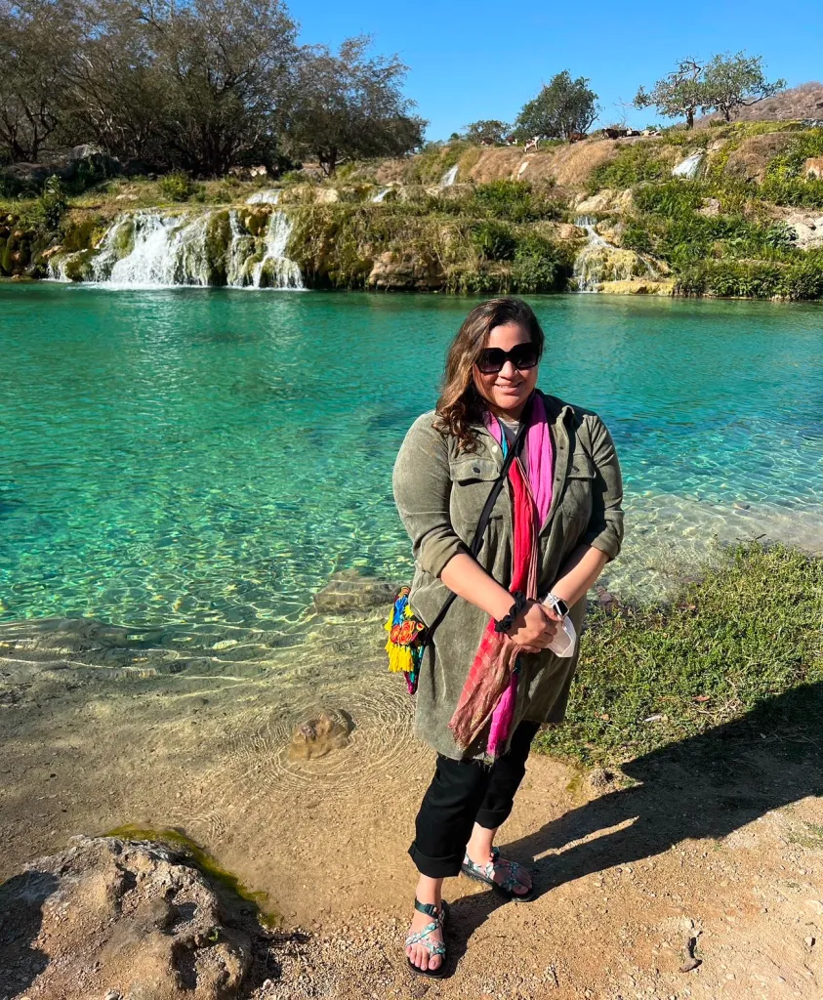
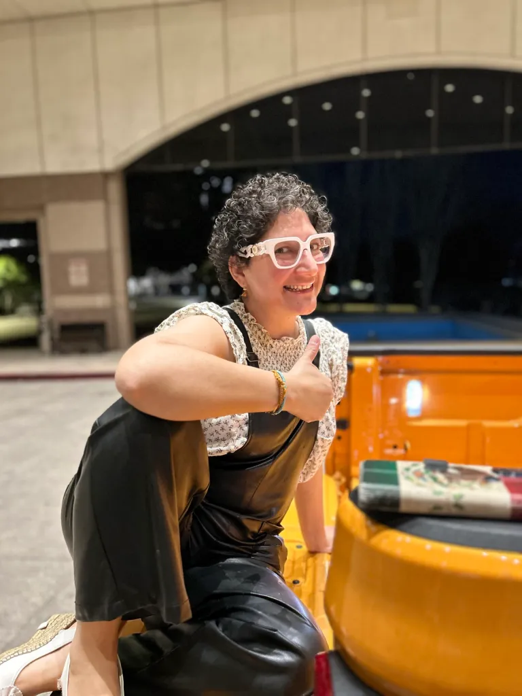
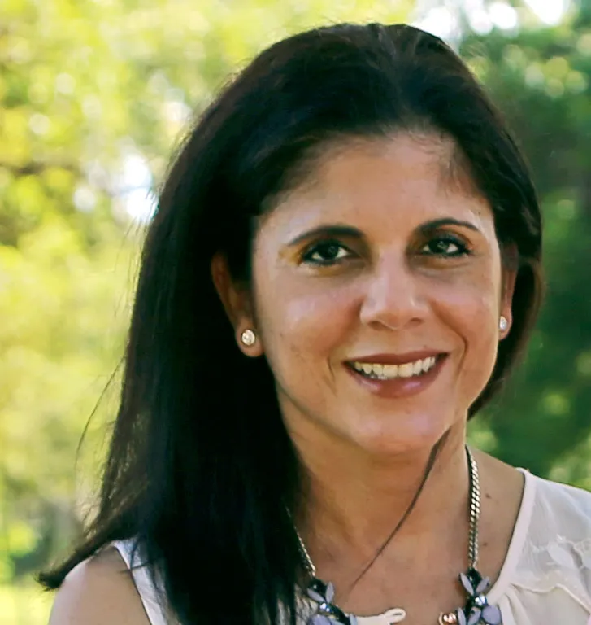

Photo by Josh Lister
Voces de Inspiración: Entrevistas con Profesoras Latinas
By Adamari Sanchez, Norjelly Herrera
March 5, 2025
Bienvenidos a Nuestra Voz, donde nos sumergimos en la celebración del Mes de la Historia de la Mujer. Marzo ha llegado, trayendo consigo la oportunidad de honrar y reflexionar sobre las contribuciones de las mujeres que han dado forma a nuestro mundo. En Nuestra Voz, creemos en la importancia de reconocer estos logros no solo durante este mes, sino todos los días.
Marzo no solo nos invita a reflexionar sobre las contribuciones de las mujeres en general, sino también a destacar el impacto transformador de las mujeres hispanas y latinas en nuestra sociedad. Estas mujeres han sido pioneras en diversos campos, desde la política y los derechos laborales hasta la literatura y la gastronomía. Figuras como Emma Tenayuca, quien lideró la histórica huelga de los peladores de nuez en San Antonio, y Luisa Moreno, una defensora incansable de los derechos de los trabajadores latinos, son ejemplos brillantes de cómo las latinas han moldeado nuestra historia.
Además, en el ámbito contemporáneo, mujeres como la chef Lorena García no sólo innovan en la cocina, sino que también trabajan para combatir el hambre infantil, demostrando que su influencia trasciende fronteras culturales y sociales. Las latinas no solo preservan su cultura e identidad, sino que también lideran cambios significativos. Según estudios recientes, están superando a sus contrapartes masculinas en logros educativos y desarrollo profesional, convirtiéndose en pilares fundamentales del avance económico y social dentro de sus comunidades. Este espíritu ambicultural les permite equilibrar tradiciones con innovación, conectándose con sus raíces mientras construyen un futuro más inclusivo y próspero.
En la Universidad de Houston–Clear Lake, no solo celebramos a estas figuras históricas, sino que también reconocemos el impacto diario de nuestras profesoras y personal académico. Estas líderes modernas están escribiendo su propia historia al inspirar a las nuevas generaciones con su dedicación y pasión por la enseñanza. Su compromiso no solo se refleja en las aulas, sino también en sus investigaciones innovadoras y su trabajo comunitario. Al igual que las mujeres que han marcado el pasado, nuestras profesoras están dejando una huella imborrable en el presente y forjando un camino hacia un futuro más equitativo e inclusivo.
HOUSTON– Para destacar el impacto significativo de nuestras profesoras latinas en la Universidad de Houston-Clear Lake (UHCL), hemos realizado una serie de entrevistas reveladoras con algunas de nuestras académicas más distinguidas. Estas conversaciones nos permiten conocer de primera mano sus experiencias, desafíos y logros en el ámbito académico.
Nuestras entrevistadas representan la diversidad y excelencia que caracterizan a nuestra institución, donde más del 44% de la población estudiantil se identifica como hispana. Estas profesoras no solo son expertas en sus campos, sino también modelos a seguir que encarnan el espíritu de nuestra designación como Institución al Servicio de los Hispanos (HSI).
A través de estas entrevistas, exploraremos cómo estás académicas están:
- Inspirando a la próxima generación de estudiantes hispanos y latinos
- Contribuyendo a la investigación innovadora en sus respectivas disciplinas
- Fomentando un ambiente de inclusión y diversidad en el campus
- Superando barreras y abriendo caminos para futuras académicas latinas
Sus historias personales y profesionales ofrecen una visión única de los desafíos y oportunidades que enfrentan las mujeres latinas en la academia, al tiempo que demuestran el poder transformador de la educación y la representación en la educación superior.
La Dra. Georgina Moreno, profesora asociada de psicología y directora de los programas de Estudios Latinx y Latinoamericanos y Neurociencia y Comportamiento en la Universidad de Houston-Clear Lake (UHCL), encontró en su familia un modelo de esfuerzo y perseverancia que la llevó a abrirse camino en el mundo académico. Por su parte, la Dra. Giazú Enciso Domínguez, profesora asistente de psicología, ha utilizado su experiencia en psicología social crítica para desafiar sistemas y promover un enfoque más inclusivo y colaborativo dentro de la educación superior. Finalmente, la Dra. Lory Z. Santiago-Vázquez, profesora asociada de biología y biotecnología, y directora del programa de maestría en biotecnología, ha demostrado que las mujeres latinas tienen un lugar en STEM, rompiendo estereotipos y sirviendo como modelo a seguir para las nuevas generaciones.
Estas tres mujeres han transformado sus disciplinas, han guiado a estudiantes y han demostrado que la diversidad en la academia no solo es necesaria, sino fundamental para el progreso. Sus historias no solo inspiran, sino que también reafirman la importancia de crear espacios donde todas las voces sean escuchadas y valoradas..
Foto de Georgina Moreno
Nacida y criada en Houston, Texas, la Dra. Georgina Moreno proviene de un hogar mexicanoamericano donde la educación y la cultura fueron pilares fundamentales. Su padre, originario de un pequeño pueblo en Guanajuato, y su madre, nacida en Brownsville antes de mudarse a Houston. Su familia tenía un fuerte sentido de identidad y valores pero fue su madre quien, con determinación y esfuerzo, despertó en ella el amor por el aprendizaje.
Desde pequeña, Moreno acompañaba a su madre a sus clases nocturnas en San Jacinto College. Mientras su hermano dormía, ella escuchaba atenta, absorbida por el ambiente académico. Con el tiempo, su madre obtuvo un título en educación en UHCL y se convirtió en maestra, abriendo un camino para que su hermana siguiera sus pasos con una maestría en educación bilingüe. La educación se convirtió en un valor fundamental en su familia, y su hermano también siguió estudios en ciencias de la computación./p>
“Ver a mi madre estudiar, criar a tres hijos y trabajar al mismo tiempo me enseñó que la educación es una puerta que siempre se puede abrir, sin importar en qué etapa de la vida estés.”
Como estudiante universitaria de primera generación, Moreno enfrentó los desafíos de navegar la educación de posgrado sin una guía clara. A pesar de la preocupación inicial de sus padres por dejar Houston, decidió seguir su propio camino y estudiar en la Universidad de Texas A&M. Después se fue a estudiar en Iowa donde obtuvo un doctorado en neurociencia. El apoyo de mentores, su curiosidad insaciable y su disposición para hacer preguntas fueron claves en su éxito académico.
A lo largo de su vida, las mujeres de su familia han sido su mayor fuente de inspiración. Su abuela, quien hoy tiene 101 años, desafió las adversidades como madre soltera para asegurar la educación de su hija. Su madre rompió esquemas al perseguir una carrera docente más tarde en la vida, y su hermana continúa apoyando a futuras educadoras bilingües.
“Las mujeres en mi familia me enseñaron que la independencia y la resiliencia son esenciales. Gracias a ellas, entendí que no hay límites cuando realmente quieres algo.”
Para las latinas que sueñan con la educación superior, Moreno subraya la importancia de construir comunidad, encontrar mentores y rodearse de quienes compartan sus metas. Aunque es importante reconocer los desafíos, la clave para seguir adelante está en centrarse en la felicidad y la pasión.
“Como dice RuPaul, tenemos que estar al tanto de lo que está pasando, pero no podemos mirarlo demasiado de cerca. En cambio, debemos enfocarnos en encontrar la alegría y la felicidad porque no vamos a ir a ningún lado.” No se trata solo de los obstáculos, sino de cómo eliges enfrentarlos y esa es la clave de cómo hacer un impacto en el mundo.
El camino y esfuerzo de Georgina Moreno es un recordatorio del poder de la educación y del impacto que las mujeres latinas pueden tener en sus comunidades. Su historia es una inspiración para quienes buscan un camino en el mundo académico, demostrando que la educación no solo transforma vidas, sino que construye futuros.
Foto de Giazú Enciso Domínguez por Norjelly Herrera
Nacida y criada en México, la Dra. Giazú Enciso Domínguez se considera “multilocal”, reconociendo cómo el contexto influye en la percepción de su identidad. Su trayectoria en psicología social crítica fue influenciada por su familia y comunidad, que siempre buscaban la justicia social. “En México, podría ser una opresora porque tengo la piel clara… aquí, me están oprimiendo porque soy morena… Realmente siento que puedo encajar entre diferentes teorías y diferentes identidades.”
Entre sus inspiraciones, menciona a su abuela, Gloria Anzaldúa y Bell Hooks. Valora especialmente a sus compañeras académicas latinas, con quienes forma parte de un grupo llamado “las Comadres.”
Enciso ha enfrentado desafíos como mujer latina en el ámbito académico, pero se inspira en el lema de César Chávez: “Aquí estamos y no nos vamos.” Aboga por la organización comunitaria y la socialización de problemas como estrategias de supervivencia.
Para el futuro de las mujeres latinas en la educación superior, Enciso propone repensar los sistemas de evaluación académica, valorando más la colaboración que el trabajo individual. “Realmente necesitamos impulsar un vocabulario diferente, premios diferentes, parámetros diferentes, no ir por medidas y evaluaciones.”
Enciso enfatiza la importancia de la diversidad en los espacios académicos: “Sin diversidad, sin reconocer al otro, no podemos seguir adelante… Necesitamos reconocer que nuestros valores morales, nuestras creencias, nuestras ideas, no son el centro del universo y no son las únicas.”
Como legado, Enciso aspira a ser recordada por traer paz y felicidad a quienes la rodean, valorando más la fuerza de la comunidad que el reconocimiento individual.
Su consejo para ella misma: “Mano en el pecho, repítete ‘lo logré’… Vas a conseguir palabras de estudiantes y gente a tu alrededor… la gente te ama y tienes que aprender a reconocer eso.”
Foto de Lory Z. Santiago-Vázquez
“Siempre he sido una persona con metas muy claras y muy determinada, incluso cuando era niña. Yo tenía objetivos, lugares a los que ir y cosas que hacer, y no había tiempo que perder.”
Criada en la hermosa isla de Puerto Rico, la Dra. Lory Z. Santiago-Vázquez soñaba inicialmente con ser azafata. Pero sin embargo, su fascinación por el océano la llevó a estudiar biología marina. Fue durante la preparatoria cuando descubrió su verdadera vocación en las ciencias, gracias a su maestra de química. Aunque no tuvo mentores formales, esta maestra fue fundamental en su vida, ayudándola a descubrir su potencial y motivándola a destacar en una materia que muchos consideraban desafiante.
“¿Quién hubiera dicho que podría hacer esta carrera, tener éxito y encajar en un molde que ni siquiera existía?”
A lo largo de su carrera, Santiago-Vázquez encontró varios mentores informales que vieron su interés por seguir más allá de una licenciatura. Aunque sus profesores universitarios fomentaron su curiosidad y pasión por las ciencias, su camino no estuvo exento de obstáculos. Como mujer latina en STEM, muchas veces fue subestimada por su apariencia. Al ser bajita y una minoría en una carrera predominantemente masculino, tuvo que demostrar constantemente sus capacidades. A pesar de estos desafíos, su amor por la biología y la biotecnología la impulsó a seguir adelante.
“Soy una persona común que por casualidad, tiene un doctorado. Me encanta estar al frente del aula hablándoles a mis estudiantes, y quizá tengo un poco más de información, pero no quiero que mis estudiantes me vean como alguien inalcanzable. Porque si me ven como alguien demasiado eminente, tal vez no se vean reflejados en mí y no crean que pueden lograrlo también.”
“Hasta el día de hoy, siguen existiendo obstáculos debido a la forma en que los sistemas están diseñados para beneficiar a ciertos grupos, dejando a otros atrás. Y siempre habrá retos, porque soy una mujer de color, hispana, pero seguiré intentándolo”, compartió Santiago-Vázquez sobre su experiencia y los desafíos que ha superado.
Hay una gran importancia cuando se habla de la representación y la mentoría para motivar a más mujeres latinas a seguir carreras en STEM. La historia de Santiago-Vázquez es un poderoso recordatorio de la resiliencia y fortaleza de las mujeres latinas y de cómo sus contribuciones siguen dando forma al futuro de la ciencia y la tecnología.
“Siempre digo: bájenme de ese pedestal, pónganme a su nivel y tal vez así puedan verse reflejados en mí. Y entonces, habrá más personas como nosotros en este campo.”
El camino de Lory Z. Santiago-Vázquez es uno de inspiración para muchos en UHCL. Poco a poco, más personas están entendiendo que cualquiera puede llegar a donde se proponga, sin importar de dónde venga. Ella compartió: “Creo que la nueva generación ha visto algo diferente. Ustedes ya no están atrapados en esas cajas, tienen una visión más amplia sobre quién puede hacer qué cosas, algo que quizá mi generación no tuvo la oportunidad de experimentar.”
Al honrar el mes de la Historia de la Mujer, celebremos los logros de mujeres latinas como Lory Z. Santiago-Vázquez, quienes han allanado el camino para las generaciones futuras. Sus historias nos recuerdan la importancia de la diversidad y la inclusión en todos los ámbitos, especialmente en el campo de STEM, donde sus contribuciones son invaluables.
“Me gustaría decirle a mi versión más joven que se tome un respiro y disfrute un poco más el camino. Porque en fin, siempre llegas a donde tienes que estar, aunque tomes distintas rutas.”
A través de la educación, la perseverancia y el compromiso con la inclusión, estas profesoras han superado barreras, inspirado a estudiantes y contribuido de manera innovadora a sus respectivos campos. Sus relatos personales y profesionales sirven como testimonio del poder transformador de la representación y la diversidad en la educación superior, a la vez que inspiran a futuras generaciones de latinas a perseguir sus sueños y dejar su propia huella en el mundo. Al celebrar sus logros, reafirmamos la importancia de fomentar un ambiente académico inclusivo donde todas las voces sean valoradas y donde se reconozca el potencial ilimitado de las mujeres latinas.
Esta es nuestra voz. This is our voice.
Leave a Reply
Your email address will not be published. Required fields are marked *